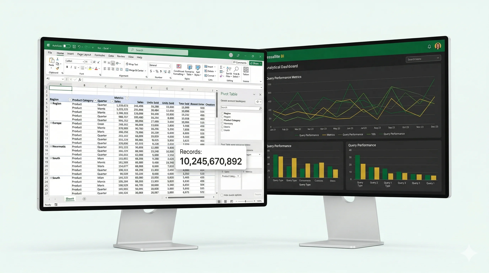
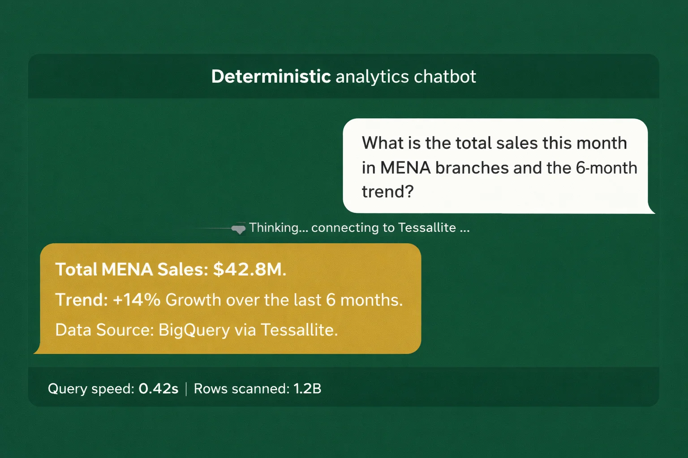
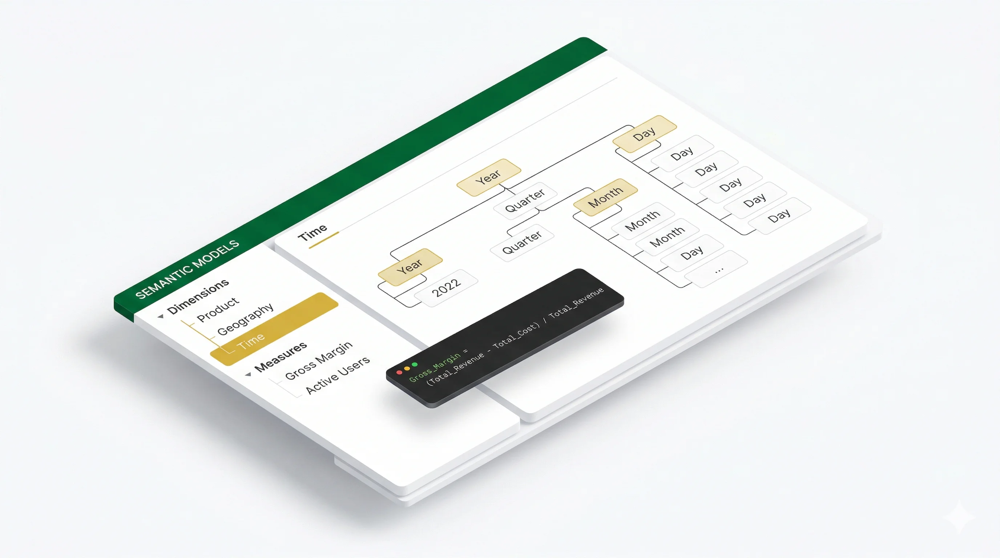
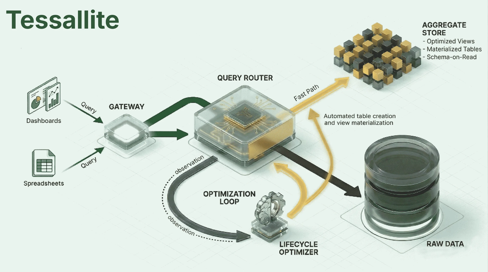

Would you like big data on an Excel sheet?
Billions of Records. Sub-Second Speed. 80% Less Cost.
Stop paying for expensive full-table scans. Tessallite is the acceleration layer that turns massive data warehouses into interactive playgrounds for users and AI agents alike.


Conversational Big Data Without the Noise
AI agents thrive on clarity, yet they are often overwhelmed by the messy reality of data warehouses. Tessallite creates a clinical environment for AI-driven discovery.
Shielding AI from Structural Noise
Tessallite does more than just accelerate; it simplifies. By serving as a governed semantic proxy, it spares your AI agents from navigating complex physical schemas and expensive multi-way joins. Instead, AI interacts with clean, logical business entities at sub-second speeds. This architectural abstraction ensures that your LLMs focus on high-level reasoning and accurate interrogation, while Tessallite handles the heavy lifting of physical optimization and data exactness under the hood.
The Blueprint of Your Analytical Universe
Stop forcing users to understand your database schema. Tessallite provides a clinical logical layer where business definitions are centralized, governed, and permanent.
Unified Measures & Dimensions
Define complex metrics like "Contribution Margin" or "LTV" once. Tessallite ensures these definitions remain consistent across Excel, Power BI, and your AI agents.
Intelligent Hierarchies
Map your data’s natural relationships—from time-series grains to geographical roll-ups—enabling seamless, error-free drill-downs at any scale.
Automated Aggregation Mapping
No more manual aggregate tuning. Tessallite automatically maps your semantic entities to the most efficient physical summary tables, maximizing ROI without human intervention.

Native Compatibility with the Entire BI Ecosystem


Why Tessallite?
We solved the three biggest hurdles in big data: cost, speed, and trust.
Kill the Full Table Scan
Every time you click a filter in BI, your warehouse scans petabytes of raw data. Tessallite stops the waste by routing queries to smart, automated aggregates—cutting your cloud bill by up to 80%.
Interactive AI Interrogation
AI needs context, but speed is the bottleneck. Tessallite’s semantic layer provides deterministic data at sub-second speeds, allowing AI to "interrogate" your big data in real-time conversations.
1 Billion Rows in Excel
Imagine opening an Excel Pivot Table connected to a 1,000,000,000 record table. With Tessallite, it feels like a local file—completely responsive, flexible, and instant.
Transparent Acceleration
Tessallite sits between your tools and your warehouse. It learns your query patterns and optimizes data access automatically.

Intercept
Tessallite provides a universal gateway for SQL and DAX queries, ensuring seamless integration with all industry-standard BI solutions.
Optimize
Our router finds the fastest way to get your answer. If a summary table exists, we use it. If not, we fall back to the source.
Save
By avoiding massive scans, your warehouse costs drop instantly while your users get answers in milliseconds.
Your Data, Your Control
Deploy Tessallite exactly where you need it. Public cloud, private VPN, or completely local.
Zero Phone Home
Tessallite does not require a connection to third-party services. Your metadata and queries stay within your network.
Air-Gapped Ready
Perfect for highly regulated environments. Run it in total isolation on your own hardware or private cloud.
Full Sovereignty
Maintain 100% ownership of your analytical patterns. No data ever leaves your environment.
The Founder's Vision
"Tessallite was built to solve a specific problem: the massive gap between big data and interactive speed. I architected this solution to give data teams—and the AI agents they build—the power to interrogate billions of records without waiting for a scan or worrying about the bill."
Mohammed Othman
Founder & Lead Architect, Tessallite
Ready for analytics at the speed of thought?
Contact us today and give your business the power of interactive big data.